Finmerge
Money management made simple, with every account, bill and expense in one place.
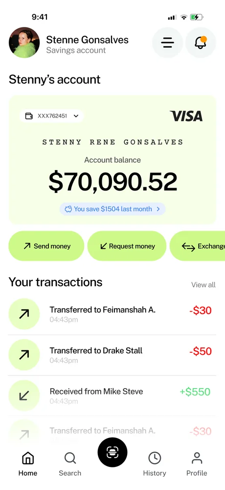
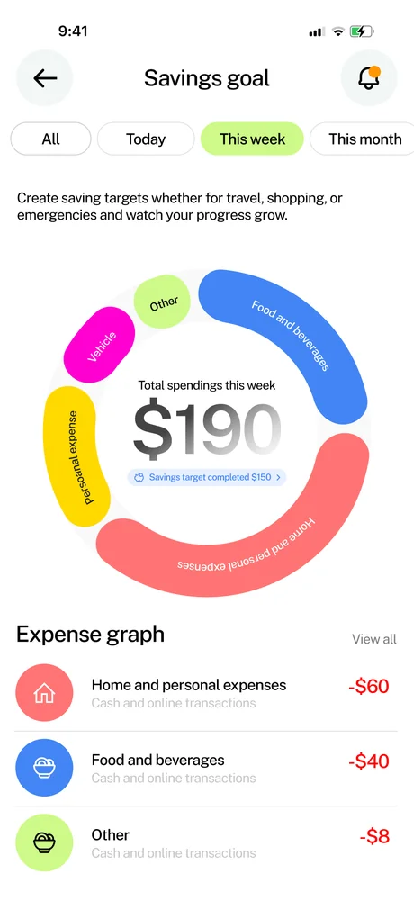
The problem
People’s money is spread across bank accounts, UPI apps and wallets. They lose track of spending, forget bills and feel stressed about money.
The solution
Finmerge brings every account into one dashboard, detects bills and sends reminders, sorts spending automatically and tracks savings goals. A home-screen widget tags expenses in seconds.
What I did
Survey and interviews, problem definition, personas, empathy maps, user journey, brainstorming, information architecture, low and high fidelity screens, and a clickable prototype.
The problem
Most people find it hard to keep track of their money. It sits in different bank accounts, apps and wallets, so it’s easy to forget bills, overspend, or simply not know where it went.
Without clear visibility, people overspend without realising it, or struggle to understand where their money is going. That leads to stress, confusion and poor financial decisions.
Whether they’re students or working professionals, most people want a simple way to stay organised, avoid missed payments and spend wisely. But current tools are too complicated, scattered, or not personal enough.
Understanding the users
A 10-question survey looked at how people manage money across platforms, how they track spending and bills, and what they expect from a simple money app.
Do you use any payment apps or digital wallets (Google Pay, PayPal, etc.)?
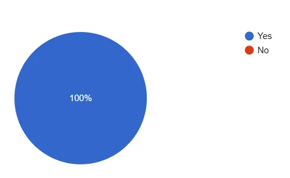
How often do you make payments using these apps?
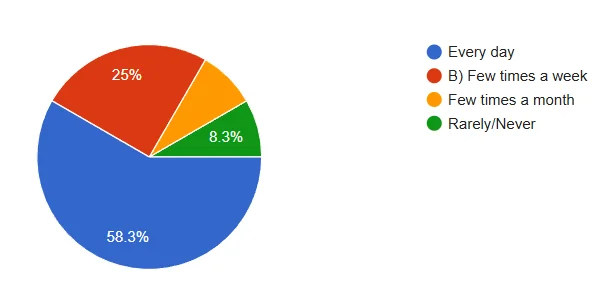
How many different payment apps or wallets do you have?
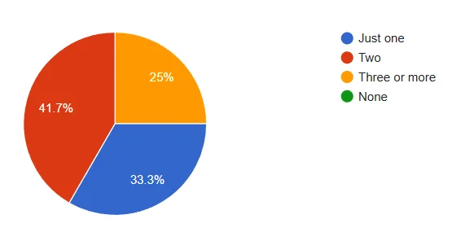
Do you keep track of your spending with any app or tool?
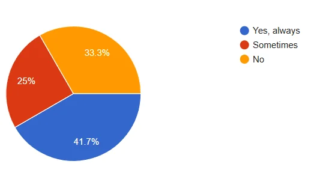
Do you find it confusing to manage money across multiple apps?
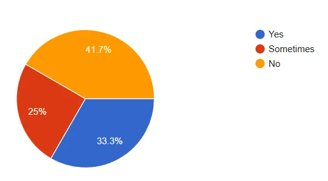
Have you ever forgotten to pay a bill because you manage money in different places?
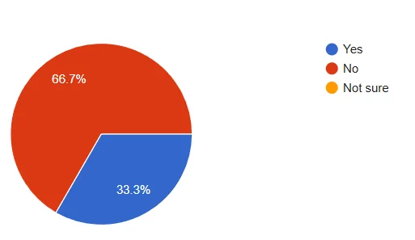
Would it be useful to have all your money details in one app?
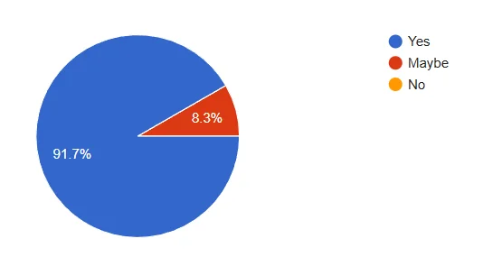
How do you know when a bill or payment is coming up?
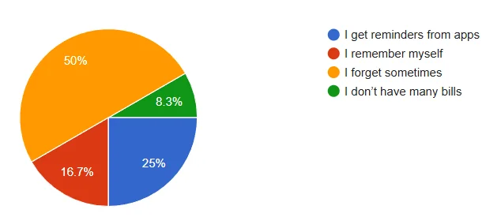
How safe do you feel about sharing your money details in an app?
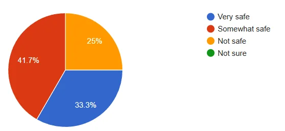
What is most difficult for you about handling money digitally?
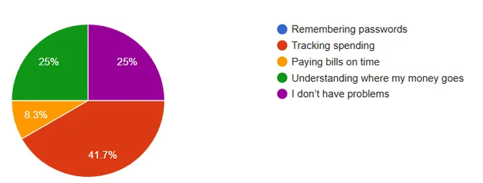
Most people manage money across several bank accounts, UPI apps and wallets, so it’s hard to see the full picture. Many rarely track spending and rely on memory for bill dates, which leads to late payments. Most said they’d welcome one simple view of all their accounts, timely reminders, and a clearer sense of their spending habits.
The core problem
People struggle to manage their finances because their money is spread across multiple bank accounts, wallets and payment apps. They lack visibility, forget bills, struggle to track spending and saving, and feel stressed and disorganised.
1 · Scattered
- Accounts everywhere
- Over-spending
2 · Blind spots
- No spending insights
- Lack of financial confidence
3 · Missed
- Missed payments
- Late fees
Personas
Siddhesh
25 · Mumbai · Studying aerospace
Uses Google Pay and PayPal to pay for things and send money to friends. His money is in different accounts, and he sometimes forgets bills or isn’t sure how much he really has.
Goals
- See all his money and payments in one app
- Reminders so he doesn’t forget bills
- Understand how he spends
- Manage money easily and save more
Pain points
- Money spread across apps and accounts
- Forgets to pay some bills on time
- Feels worried and confused about money
Ameya
22 · Punjab · Studying UI/UX design
Uses PhonePe, Paytm and Google Pay for food, travel and shopping. With several accounts, it’s tricky to know exactly how much she has or spends, and she sometimes forgets small payments.
Goals
- One simple app to see all her money
- Clear reminders for upcoming bills
- Track daily spending easily
- Be less stressed and save for things she likes
Pain points
- Money scattered across apps and accounts
- Doesn’t know her monthly spend
- Money management feels slow and confusing
Siddhesh
Says
- “I keep forgetting when my bills are due.”
- “It’s hard to know how much I really have right now.”
- “I wish managing money was easier.”
Thinks
- “Am I spending too much on food or outings?”
- “There must be a better way to track my payments.”
- “I hope I can save some money this month.”
Does
- Checks each app or account separately to see balances
- Writes down expenses sometimes, but not regularly
- Pays bills last-minute or late
Feels
- Stressed about missing important payments
- Confused by too many apps and accounts
- Relieved when everything is clear and reminders work
Ameya
Says
- “I have money here, there… I forget which app sometimes!”
- “Why is money management so confusing?”
- “Notifications would really help with my bills.”
Thinks
- “Did I already pay that bill?”
- “Where did my money go this month?”
- “I want to save for things I like, but it’s hard.”
Does
- Swaps between payment apps for purchases
- Skips tracking spending when busy
- Looks for easy ways to pay bills
Feels
- Anxious about missing payments
- Overwhelmed by different apps
- Happy when she gets reminders and sees savings grow
User journey
| Stage | Steps | Thinking | Doing | Feeling | Pain points | Opportunities |
|---|---|---|---|---|---|---|
| Awareness | Wants a reliable expense tracker | “Current apps fail at tracking money. I need something accurate.” | Reads about the app on forums and social media | Curious | Not aware of the full benefits | Awareness campaigns in colleges and communities |
| Consideration | Chooses the best money tracker | “Does this app support multiple payment methods?” | Compares it with competitors | Unsure | Overwhelmed by similar apps | Clear comparison with competitors |
| Acquisition | Downloads and sets up the app | “How easy is the setup?” | Downloads the app | Hopeful | Fear of complicated onboarding | Smooth, guided onboarding with accessibility tips |
| Service | Uses the app daily | “Is the payment calculated correctly?” | Uses tracking and dashboards | Calm | Occasional errors | A widget for quickly tagging payments |
| Loyalty | Keeps using it, recommends it | “Will I keep using this daily? Can I rely on it long term?” | Checks where money went and how much was saved | Delighted | Wants more updates to keep value | Badges and rewards for great savings |
This showed the need for a simple app that brings all accounts and payments together, tracks spending, sends helpful reminders, and makes money management easy and stress-free.
Brainstorming
Affinity mapping grouped the ideas into eight directions. These became the feature set.
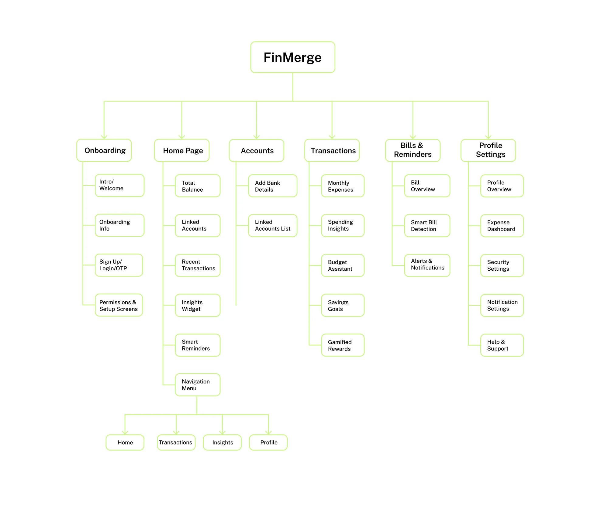
Low fidelity
Low-fidelity wireframes set the layout, structure and key screens before any styling.
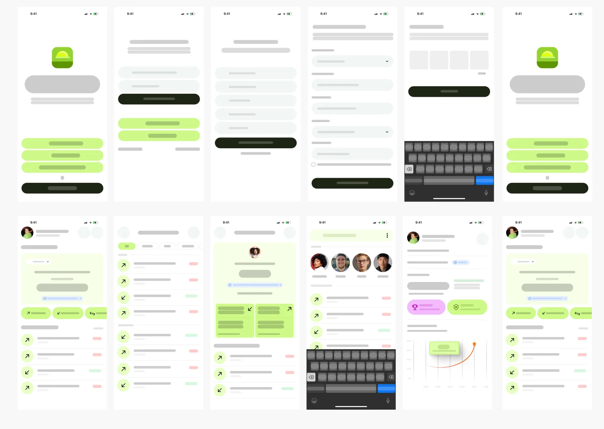
High fidelity
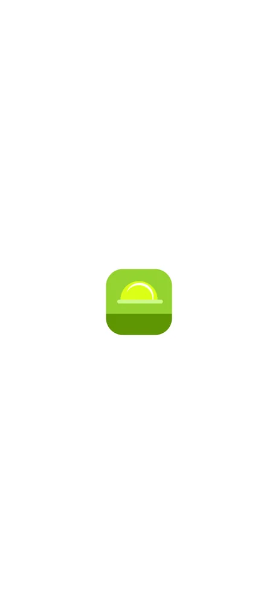
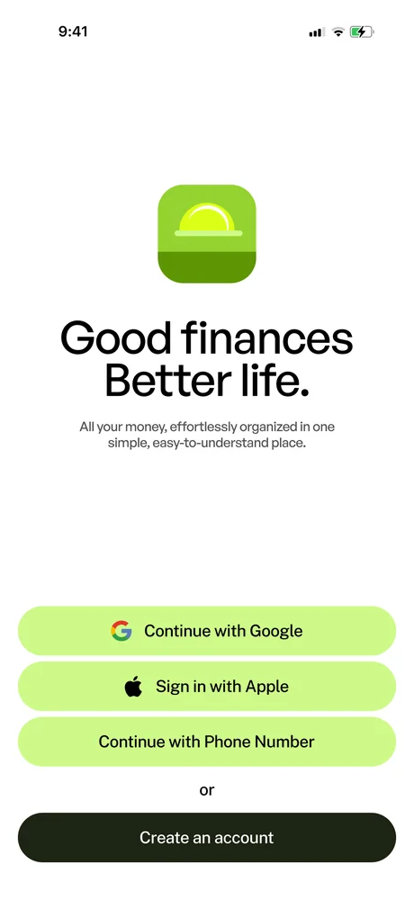
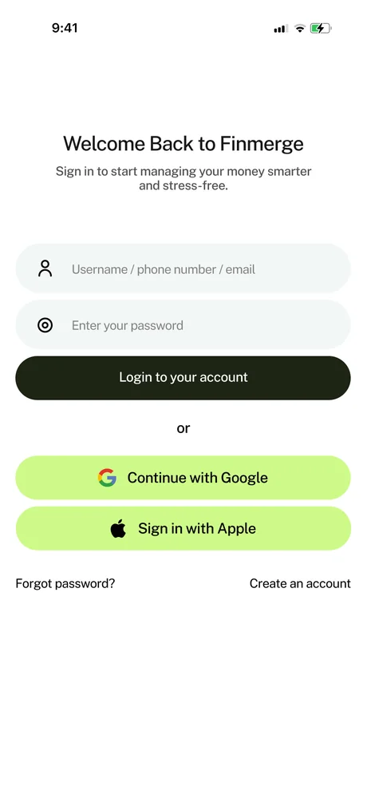
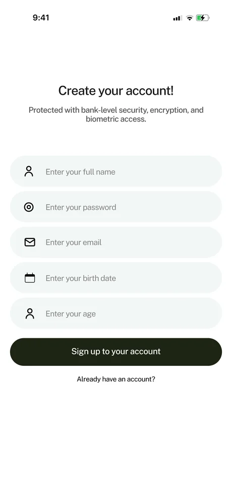
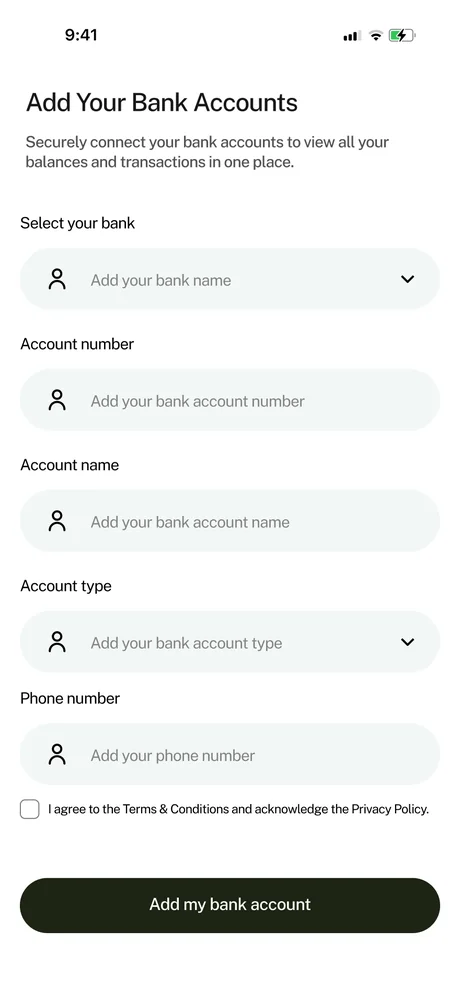
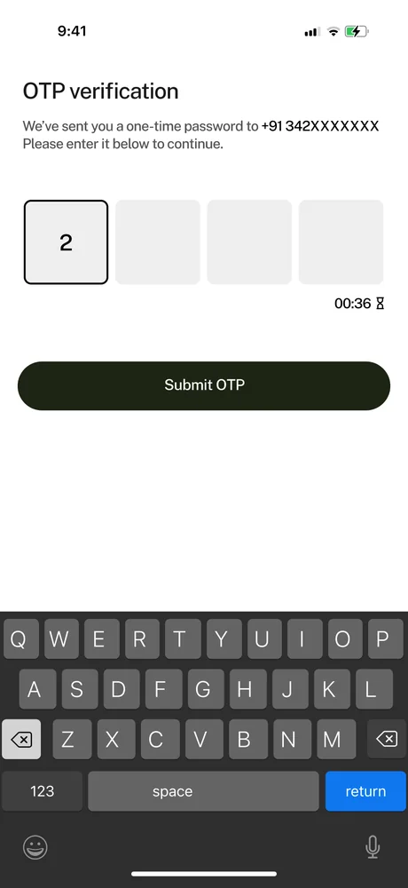
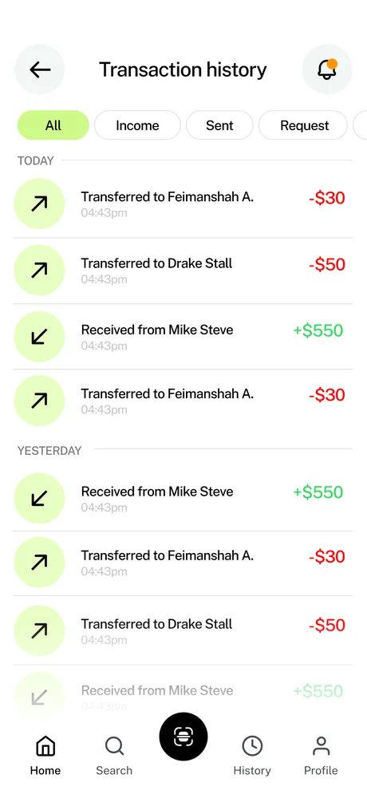
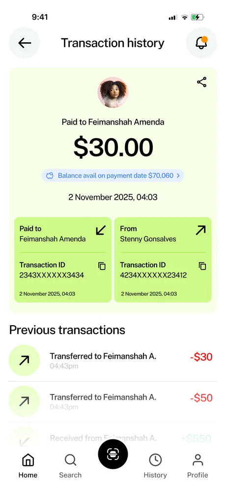
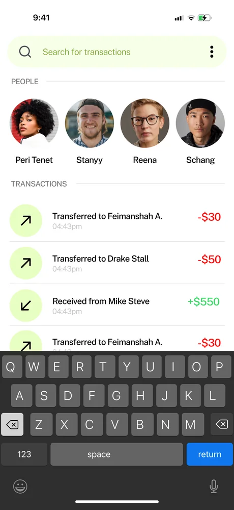
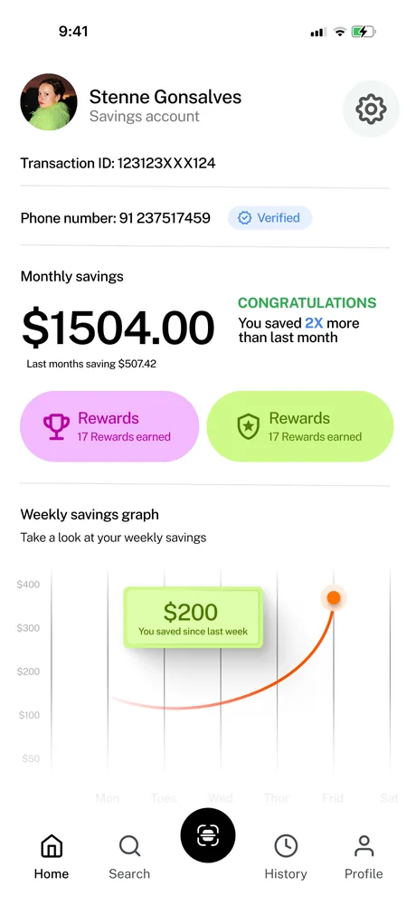
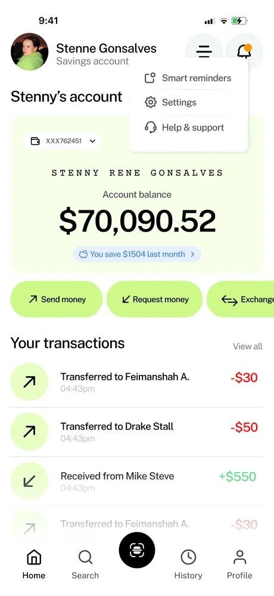
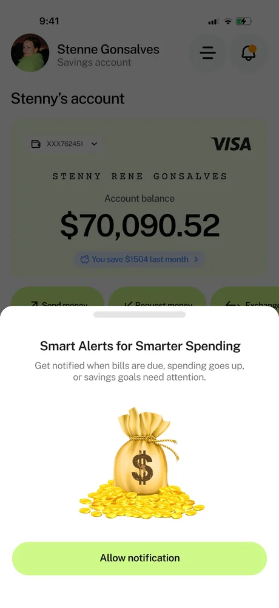
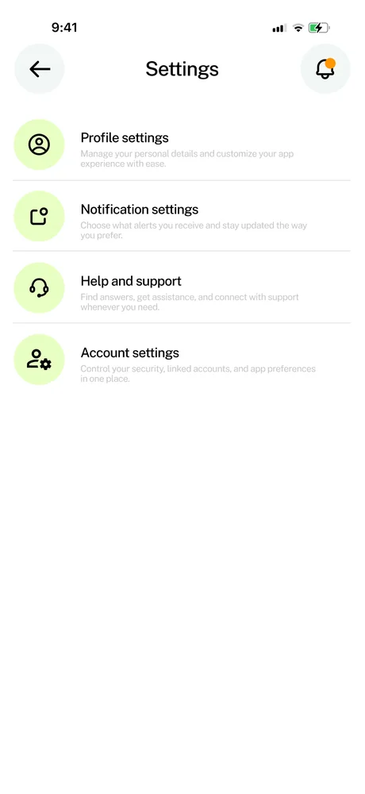
Tag it in one tap
Users skip tracking when they’re busy. So I designed a home-screen widget that tags today’s expense in one tap, without opening the app.
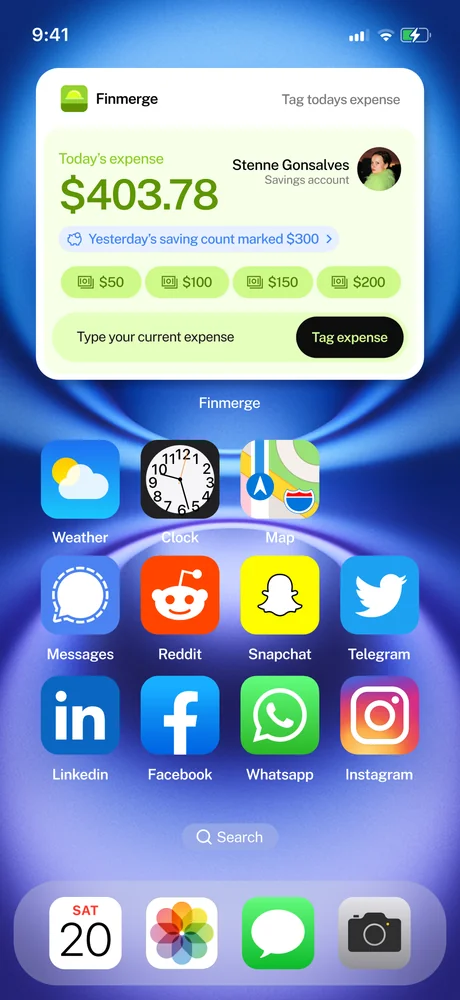
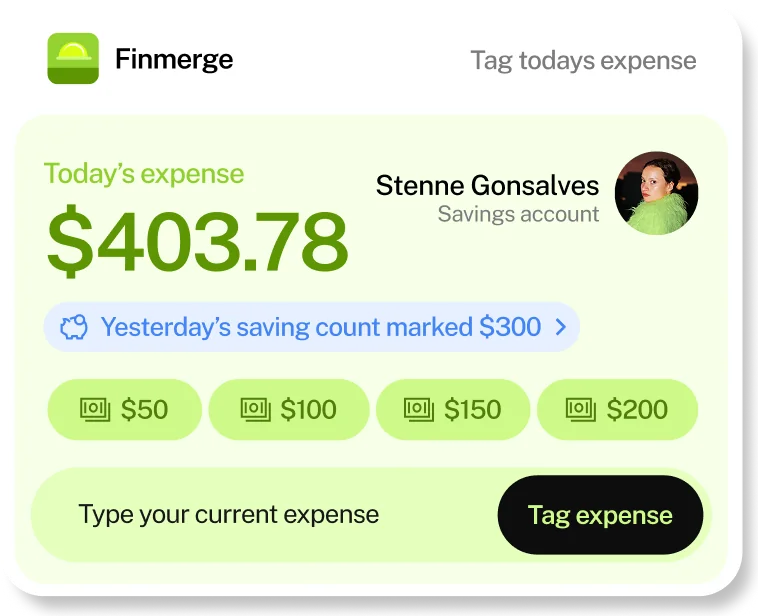
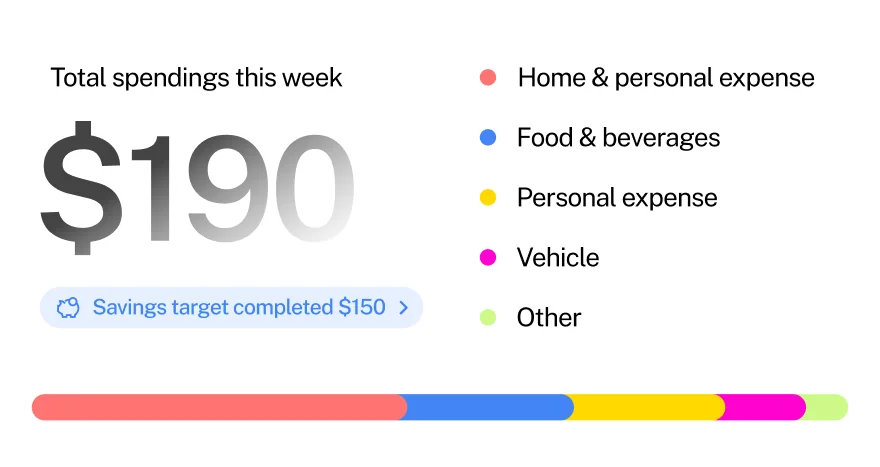
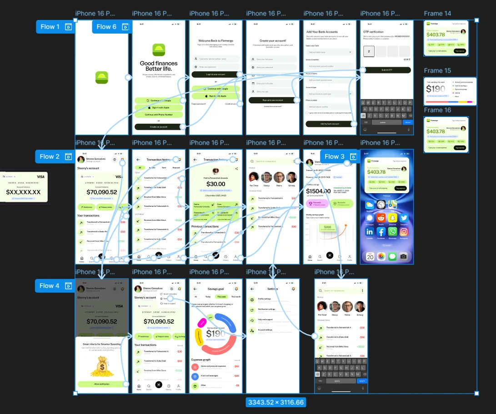
Takeaways
The research kept pointing to the same thing: people don’t need more financial features, they need less effort. So Finmerge puts everything in one place and makes the two most-skipped habits, tracking spending and remembering bills, almost automatic.
- The widget came straight from the finding that people skip tracking when they’re busy.
- Reminders and the unified balance answer the two most common fears: missed bills and not knowing what’s left.
- Next step: usability-test onboarding, since linking bank accounts is where trust matters most.